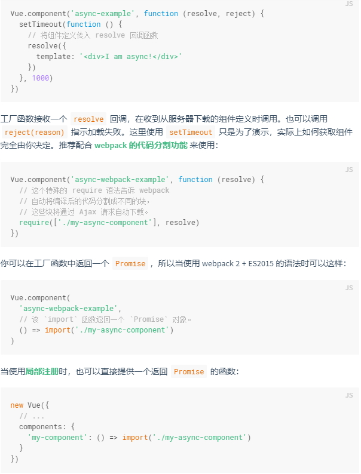

什么是组件?
组件 (Component) 是 Vue.js 最强大的功能之一。组件可以扩展 HTML 元素，封装可重用的代码。在较高层面上，组件是自定义元素，Vue.js 的编译器为它添加特殊功能。在有些情况下，组件也可以表现为用 is 特性进行了扩展的原生 HTML 元素。
所有的 Vue 组件同时也都是 Vue 的实例，所以可接受相同的选项对象 (除了一些根级特有的选项) 并提供相同的生命周期钩子。
使用组件
#全局注册
我们已经知道，可以通过以下方式创建一个 Vue 实例：
new Vue({
el: '#some-element',
// 选项
})
要注册一个全局组件，可以使用 Vue.component(tagName, options)。例如：
Vue.component('my-component', {
// 选项
})
请注意，对于自定义标签的命名 Vue.js 不强制遵循 W3C 规则 (小写，并且包含一个短杠)，尽管这被认为是最佳实践
组件在注册之后，便可以作为自定义元素 《my-component》《/my-component》 在一个实例的模板中使用。注意确保在初始化根实例之前注册组件：
《div id="example"》
《my-component》《/my-component》
《/div》
// 注册
Vue.component('my-component', {
template: '《div》A custom component!《/div》'
})
// 创建根实例
new Vue({
el: '#example'
})
渲染为：
《div id="example"》
《div》A custom component!《/div》
《/div》
#局部注册
你不必把每个组件都注册到全局。你可以通过某个 Vue 实例/组件的实例选项 components 注册仅在其作用域中可用的组件
var Child = {
template: '《div》A custom component!《/div》'
}
new Vue({
// ...
components: {
//
将只在父组件模板中可用这种封装也适用于其它可注册的 Vue 功能，比如指令。
#DOM模板解析注意事项
当使用 DOM 作为模板时 (例如，使用 el 选项来把 Vue 实例挂载到一个已有内容的元素上)，你会受到 HTML 本身的一些限制，因为 Vue 只有在浏览器解析、规范化模板之后才能获取其内容。尤其要注意，像 ul、ol、table、select 这样的元素里允许包含的元素有限制，而另一些像 option 这样的元素只能出现在某些特定元素的内部。
《table》自定义组件 《my-row》 会被当作无效的内容，因此会导致错误的渲染结果。变通的方案是使用特殊的 [is] 特性：
《table》应当注意，如果使用来自以下来源之一的字符串模板，则没有这些限制：
《script type="text/x-template"》《/script》
JavaScript 内联模板字符串
.vue 组件
因此尽可能使用字符串模板
data 必须时函数
构造 Vue 实例时传入的各种选项大多数都可以在组件里使用。只有一个例外：data 必须是函数。实际上，如果你这么做：
Vue.component('my-component', {{{ message }} ',那么 Vue 会停止运行，并在控制台发出警告，告诉你在组件实例中 data 必须是一个函数。但理解这种规则为何存在也是很有益处的，所以让我们先作个弊：
由于这三个组件实例共享了同一个 data 对象，因此递增一个 counter 会影响所有组件！这就错了。我们可以通过为每个组件返回全新的数据对象来修复这个问题：
#组件组合
组件设计初衷就是要配合使用的，最常见的就是形成父子组件的关系：组件 A 在它的模板中使用了组件 B。它们之间必然需要相互通信：父组件可能要给子组件下发数据，子组件则可能要将它内部发生的事情告知父组件。然而，通过一个良好定义的接口来尽可能将父子组件解耦也是很重要的。这保证了每个组件的代码可以在相对隔离的环境中书写和理解，从而提高了其可维护性和复用性
在 Vue 中，父子组件的关系可以总结为 prop 向下传递 ，事件向上传递 。父组件通过 prop 给子组件下发数据，子组件通过事件给父组件发送消息。看看它们是怎么工作的。
Prop
#使用Prop传递数据
组件实例的作用域是孤立的。这意味着不能 (也不应该) 在子组件的模板内直接引用父组件的数据。父组件的数据需要通过 prop 才能下发到子组件中。
子组件要显式地用 props 选项声明它预期的数据：
Vue.component('child', {{{ message }} '然后我们可以这样向它传入一个普通字符串:
《child message="hello!"》《/child》
结果是: hello!
#camelCase(驼峰命名法) vs.Kebab-case(短横线分隔式命名法):
HTML 特性是不区分大小写的。所以，当使用的不是字符串模板时，camelCase (驼峰式命名) 的 prop 需要转换为相对应的 kebab-case (短横线分隔式命名)：
Vue.component('child', {{{ myMessage }} '
-- 在 HTML 中使用 kebab-case --
如果你使用字符串模板,则没有这些限制
#动态Prop
与绑定到任何普通的 HTML 特性相类似，我们可以用 v-bind 来动态地将 prop 绑定到父组件的数据。每当父组件的数据变化时，该变化也会传导给子组件：
《div》
如果你想把一个对象的所有属性作为 prop 进行传递，可以使用不带任何参数的 v-bind (即用 v-bind 而不是 v-bind:prop-name)。例如，已知一个 todo 对象：
todo: {
然后：
《todo-item v-bind="todo"》《/todo-item》
将等价于:
《todo-item
#字面量语法 vs 动态语法
初学者常犯的一个错误是使用字面量语法传递数值:
-- 传递了一个字符串 "1" --
因为它是一个字面量 prop，它的值是字符串 "1" 而不是一个数值。如果想传递一个真正的 JavaScript 数值，则需要使用 v-bind，从而让它的值被当作 JavaScript 表达式计算：
-- 传递真正的数值 --
#单项数据流
Prop 是单向绑定的：当父组件的属性变化时，将传导给子组件，但是反过来不会。这是为了防止子组件无意间修改了父组件的状态，来避免应用的数据流变得难以理解。
另外，每次父组件更新时，子组件的所有 prop 都会更新为最新值。这意味着你不应该在子组件内部改变 prop。如果你这么做了，Vue 会在控制台给出警告。
在两种情况下，我们很容易忍不住想去修改 prop 中数据：
1.Prop 作为初始值传入后，子组件想把它当作局部数据来用；
2.Prop 作为原始数据传入，由子组件处理成其它数据输出。
对这两个中情况，正确的对应方式是:
1.定义一个局部变量，并用 prop 的值初始化它：
props: ['initialCounter'],
2.定义一个计算属性，处理 prop 的值并返回：
props: ['size'],
computed: {
normalizedSize: function () {
return this.size.trim().toLowerCase()
}
}
注意在 JavaScript 中对象和数组是引用类型，指向同一个内存空间，如果 prop 是一个对象或数组，在子组件内部改变它会影响父组件的状态。
#Prop验证
我们可以为组件的 prop 指定验证规则。如果传入的数据不符合要求，Vue 会发出警告。这对于开发给他人使用的组件非常有用。
要指定验证规则，需要用对象的形式来定义 prop，而不能用字符串数组：
type 可以是下面原生构造器：
String
Number
Boolean
Function
Object
Array
Symbol
type 也可以是一个自定义构造器函数，使用 instanceof 检测
当 prop 验证失败，Vue 会抛出警告 (如果使用的是开发版本)。注意 prop 会在组件实例创建之前进行校验，所以在 default 或 validator 函数里，诸如 data、computed 或 methods 等实例属性还无法使用。
非Prop特性
所谓非 prop 特性，就是指它可以直接传入组件，而不需要定义相应的 prop。
尽管为组件定义明确的 prop 是推荐的传参方式，组件的作者却并不总能预见到组件被使用的场景。所以，组件可以接收任意传入的特性，这些特性都会被添加到组件的根元素上
例如，假设我们使用了第三方组件 bs-date-input，它包含一个 Bootstrap 插件，该插件需要在 input 上添加 data-3d-date-picker 这个特性。这时可以把特性直接添加到组件上 (不需要事先定义 prop)：
《bs-date-input data-3d-date-picker="true"》《/bs-date-input》
添加属性 data-3d-date-picker="true" 之后，它会被自动添加到 bs-date-input 的根元素上。
#替换/合并现有的特性
假设这是 bs-data-input 的模板：
《input type="date" class="form-control"》
为了给该日期选择器插件增加一个特殊的主题，我们可能需要增加一个特殊的 class，比如：
《bs-date-input
data-3d-date-picker="true"
class="date-picker-theme-dark"
》《/bs-date-input》
在这个例子当中，我们定义了两个不同的 class 值
form-control，来自组件自身的模板
date-picker-theme-dark，来自父组件
对于多数特性来说，传递给组件的值会覆盖组件本身设定的值。即例如传递 type="large" 将会覆盖 type="date" 且有可能破坏该组件！所幸我们对待 class 和 style 特性会更聪明一些，这两个特性的值都会做合并 (merge) 操作，让最终生成的值为：form-control date-picker-theme-dark。
自定义事件
我们知道，父组件使用 prop 传递数据给子组件。但子组件怎么跟父组件通信呢？这个时候 Vue 的自定义事件系统就派得上用场了
#使用 v-on 绑定自定义事件
每个Vue实例都实现了事件接口,即：
使用 $on(eventName)监听事件
使用 $emit(eventName)触发事件
Vue 的事件系统与浏览器的 EventTarget API 有所不同。尽管它们的运行起来类似，但是 $on 和 $emit 并不是addEventListener 和 dispatchEvent 的别名
另外，父组件可以在使用子组件的地方直接用 v-on 来监听子组件触发的事件。
不能用 $on 侦听子组件释放的事件，而必须在模板里直接用 v-on 绑定，参见下面的例子。
在本例中，子组件已经和它外部完全解耦了。它所做的只是报告自己的内部事件，因为父组件可能会关心这些事件。请注意这一点很重要。
#给组件绑定原生事件
有时候，你可能想在某个组件的根元素上监听一个原生事件。可以使用 v-on 的修饰符 .native。例如：
《my-component v-on:click.native="doTheThing"》《/my-component》
#.sync 修饰符(2.3.0+)
在一些情况下，我们可能会需要对一个 prop 进行“双向绑定”。事实上，这正是 Vue 1.x 中的 .sync 修饰符所提供的功能。当一个子组件改变了一个带 .sync 的 prop 的值时，这个变化也会同步到父组件中所绑定的值。这很方便，但也会导致问题，因为它破坏了单向数据流。由于子组件改变 prop 的代码和普通的状态改动代码毫无区别，当光看子组件的代码时，你完全不知道它何时悄悄地改变了父组件的状态。这在 debug 复杂结构的应用时会带来很高的维护成本。
上面所说的正是我们在 2.0 中移除 .sync 的理由。但是在 2.0 发布之后的实际应用中，我们发现 .sync 还是有其适用之处，比如在开发可复用的组件库时。我们需要做的只是让子组件改变父组件状态的代码更容易被区分。
从 2.3.0 起我们重新引入了 .sync 修饰符，但是这次它只是作为一个编译时的语法糖存在。它会被扩展为一个自动更新父组件属性的 v-on 监听器。
如下代码：
《comp :foo.sync="bar"》《/comp》
会被扩展为:
《comp :foo="bar" @update:foo="val => bar = val"》《/comp》
当子组件需要更新 foo 的值时，它需要显式地触发一个更新事件：
this.$emit('update:foo', newValue)
#使用自定义事件的表单输入组件
自定义事件可以用来创建自定义的表单输入组件，使用 v-model 来进行数据双向绑定。要牢记：
《input v-model="dosomething"》
这不过是以下示例的语法糖：
《input
所以在组件中使用时，它相当于下面的简写：
《custom-input
所以要让组件的 v-model 生效，它应该 (从 2.2.0 起是可配置的)：
接受一个 value prop
在有新的值时触发 input 事件并将新值作为参数
我们来看一个非常简单的货币输入的自定义控件：
#自定义组件的 v-model [2.2.0新增]
默认情况下，一个组件的 v-model 会使用 value prop 和 input 事件。但是诸如单选框、复选框之类的输入类型可能把 value 用作了别的目的。model 选项可以避免这样的冲突：
《my-checbox v-model="foo" value="some value"》《/my-checbox》
注意你仍然需要显示声明 checked 这个prop。
#非父子组件的通信
有时候，非父子关系的两个组件之间也需要通信。在简单的场景下，可以使用一个空的 Vue 实例作为事件总线：
var aha = new Vue()
aha.$emit('id-selected', 1)
aha.$on('id-selected', function (id) {})
使用插槽分发内容
在使用组件时，我们常常要像这样组合他们：
《app》
《app-header》《/app-header》
《app-footer》《/app-footer》
《/app》
注意亮点：
《app》 组件不知道它会收到什么内容。这是由使用 《app》 的父组件决定的。
《app》 组件很可能有它自己的模板。
为了让组件可以组合，我们需要一种方式来混合父组件的内容与子组件自己的模板。这个过程被称为内容分发 (即 Angular 用户熟知的“transclusion”)。Vue.js 实现了一个内容分发 API，参照了当前 Web Components 规范草案，使用特殊的 元素作为原始内容的插槽。
#编译作用域
在深入内容分发API之前，我们先明确内容哪在哪个作用域里编译。假定模板为：
message 应该绑定到父组件的数据，还是绑定到子组件的数据？答案是父组件。组件作用于简单地说是：
父组件模板的内容在父组件作用域内编译；子组件模板的内容在子组件作用域内编译。
一个常见错误是试图在父组件模板内将一个指令绑定到子组件的属性/方法：
-- 无效 --
假定 someChildProperty 是子组件的属性，上例不会如预期那样工作。父组件模板并不感知子组件的状态。
如果要绑定子组件作用于内地指令到一个组件地根节点，你应当在子组件自己地模板里做
Vue.component('child-component', {
类似地，被分发的内容也会在父作用域内编译
#单个插槽
除非子组件模板包含至少一个 《slot》 插口，否则父组件的内容将会被丢弃。当子组件模板只有一个没有属性的插槽时，父组件传入的整个内容片段将插入到插槽所在的 DOM 位置，并替换掉插槽标签本身。
最初在 【slot】 标签中的任何内容都被视为备用内容。备用内容在子组件的作用域内编译，并且只有在宿主元素为空，且没有要插入的内容时才显示备用内容。
假定 my-component 组件有如下模板：
《div》
父组件模板：
《div》
渲染结果:
《div》
#具名插槽
[slot] 元素可以用一个特殊的特性 name 来进一步配置如何分发内容。多个插槽可以有不同的名字。具名插槽将匹配内容片段中有对应 slot 特性的元素。
仍然可以有一个匿名插槽，它是默认插槽，作为找不到匹配的内容片段的备用插槽。如果没有默认插槽，这些找不到匹配的内容片段将被抛弃。
#作用插槽 [2.1.0新增]
作用域插槽是一种特殊类型的插槽，用作一个 (能被传递数据的) 可重用模板，来代替已经渲染好的元素。
在子组件中，只需将数据传递到插槽，就像你将 prop 传递给组件一样：
《div class="child"》
在父级中，具有特殊特性 slot-scope 的 [template] 元素必须存在，表示它是作用域插槽的模板。slot-scope 的值将被用作一个临时变量名，此变量接收从子组件传递过来的 prop 对象：
在[2.5.0+], [slot-scpoe]能被用在任意元素或组件中而不再局限于 [template]
作用域插槽更典型的用例是在列表组件中，允许使用者自定义如何渲染列表的每一项：
解构
slot-scope 的值实际上是一个可以出现在函数签名参数位置的合法的 JavaScript 表达式。这意味着在受支持的环境 (单文件组件或现代浏览器) 中，您还可以在表达式中使用 ES2015 解构：
《child》
动态组件
通过使用保留的 【component】 元素，动态地绑定到它的 [is] 特性，我们让多个组件可以使用同一个挂载点，并动态切换：
var vm = new Vue({
《component v-bind:is="currentView"》
也可以直接绑定到组件对象上:
var Home = {
#keep-alive
如果把切换出去的组件保留在内存中，可以保留它的状态或避免重新渲染。为此可以添加一个 keep-alive 指令参数：
《keep-alive》
杂项
#编写可复用组件
在编写组件时，最好考虑好以后是否要进行复用。一次性组件间有紧密的耦合没关系，但是可复用组件应当定义一个清晰的公开接口，同时也不要对其使用的外层数据作出任何假设。
Vue组件的Api来自三部分--prop、事件和插槽:
Prop 允许外部环境传递数据给组件;
事件 允许从组件内部触发外部环境的副作用;
插槽 允许外部环境将额外的内容组合在组件中。
使用 v-bind 和 v-on 的简写语法，模板的意图会更清楚且简洁：
《my-component
#子组件引用
尽管有 prop 和事件，但是有时仍然需要在 JavaScript 中直接访问子组件。为此可以使用 ref 为子组件指定一个引用 ID。例如：
《div》
var parent = new Vue({ el: '#parent' })
当 ref 和 v-for 一起使用时，获取到的引用会是一个数组，包含和循环数据源对应的子组件。
$refs 只在组件渲染完成后才填充，并且它是非响应式的。它仅仅是一个直接操作子组件的应急方案——应当避免在模板或计算属性中使用 $refs。
#异步组件
在大型应用中，我们可能需要将应用拆分为多个小模块，按需从服务器下载。为了进一步简化，Vue.js 允许将组件定义为一个工厂函数，异步地解析组件的定义。Vue.js 只在组件需要渲染时触发工厂函数，并且把结果缓存起来，用于后面的再次渲染。例如：

如果你是 Browserify 用户，可能就无法使用异步组件了，它的作者已经表明 Browserify 将“永远不会支持异步加载”。Browserify 社区发现了一些解决方法，可能会有助于已存在的复杂应用。对于其他场景，我们推荐使用 webpack，因为它对异步加载进行了内置、全面的支持。
#高级异步组件 [2.3.0新增]
自 2.3.0 起，异步组件的工厂函数也可以返回一个如下的对象：
#组件命名约定
当注册组件（或者prop）时，可以使用kebab-case(短横线分隔命名)、camelCase（驼峰式命名）或者PascalCase（单词首字母大写命名）。
// 在组件定义中
在html模板中，使用kebab-base：
!-- 在 HTML 模板中始终使用 kebab-case --
当使用字符串模式时，可以不受 HTML 大小写不敏感的限制。这意味实际上在模板中，你可以使用下面的方式来引用你的组件：
kebab-case
camelCase 或 kebab-case (如果组件已经被定义为 camelCase)
kebab-case、camelCase 或 PascalCase (如果组件已经被定义为 PascalCase)
components: {
这意味着 PascalCase 是最通用的[声明约定]而kebab-case是最通用的[使用约定]
如果组件未经 [slot] 元素传入内容，你甚至可以把组件名后使用 [/] 使其自动闭合
《my-component/》
当然，这只在字符串模板中有效。因为自闭的自定义元素是无效的 HTML，浏览器原生的解析器也无法识别它。
#递归组件
组件在它的模版内可以递归地调用自己。不过只有当它有 [name] 选项时在可以这么做：
name: 'unique-name-of-my-component'
当你利用 Vue.component 全局注册了一个组件，全局ID会被自动设置为组件的name
Vue.component('unique-name-of-my-component', {})
如果稍有不慎，递归组件可能导致死循环:
name: 'stack-overflow,'
上面组件会导致一个“max stack size exceeded”错误，所以要确保递归调用有终止条件 (比如递归调用时使用 v-if 并最终解析为 false)。
#组件间的循环引用
假设你正在构建一个文件目录树，像在 Finder 或资源管理器中。你可能有一个 tree-folder 组件
beforeCreate: function () {
#内联模板
如果子组件有 inline-template 特性，组件将把它的内容当作它的模板，而不是把它当作分发内容。这让模板编写起来更灵活。
但是 inline-template 让模板的作用域难以理解。使用 template 选项在组件内定义模板或者在 .vue 文件中使用 template 元素才是最佳实践。
#X-Template
另一种定义模板的方式是在 JavaScript 标签里使用 text/x-template 类型，并且指定一个 id。例如：
这在有很多大模板的演示应用或者特别小的应用中可能有用，其它场合应该避免使用，因为这将模板和组件的其它定义分离了。
对低开销的静态组件使用 v-once
尽管在 Vue 中渲染 HTML 很快，不过当组件中包含大量静态内容时，可以考虑使用 v-once 将渲染结果缓存起来，就像这样：
Vue.component('terms-of-service', {